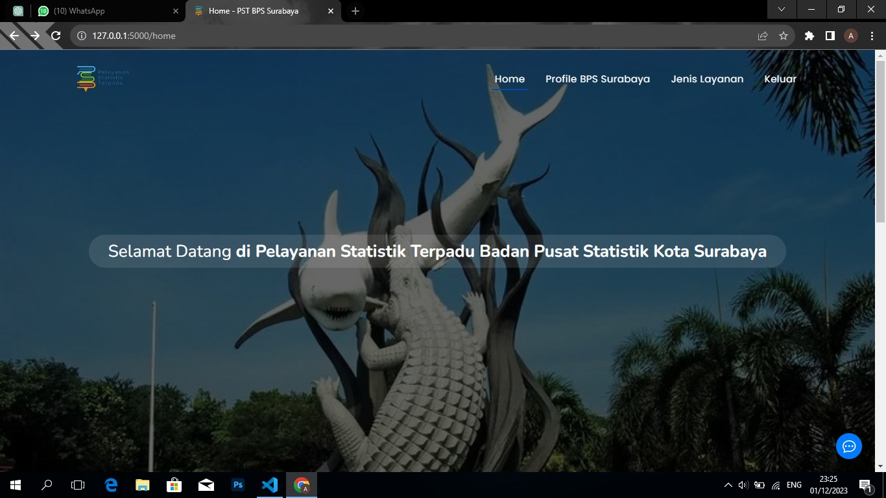
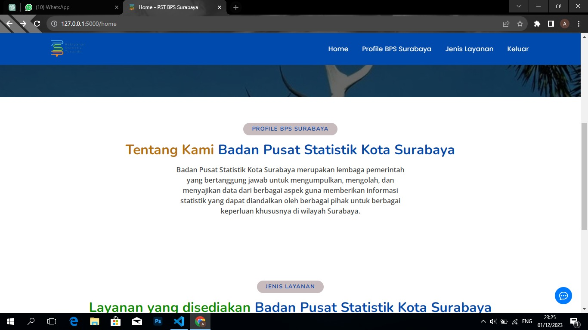
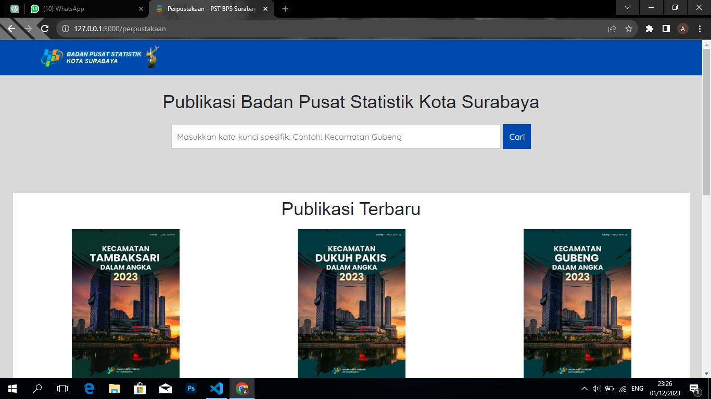
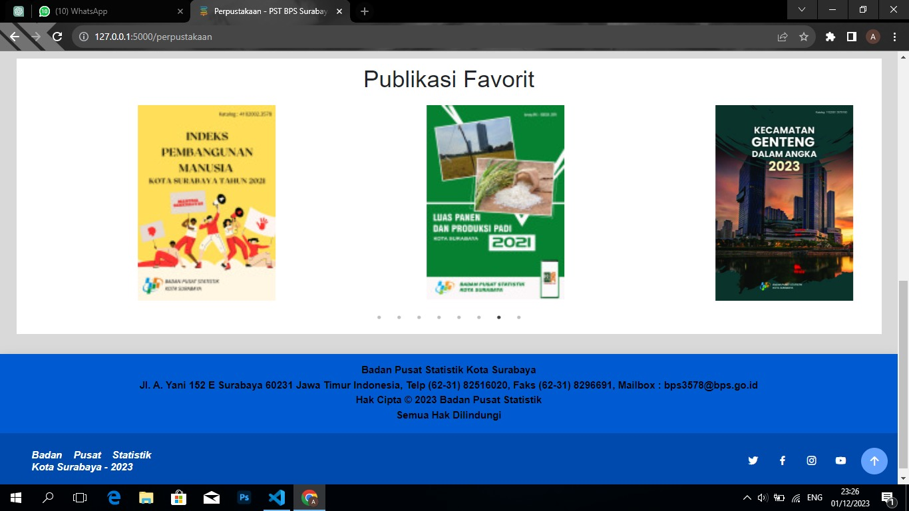
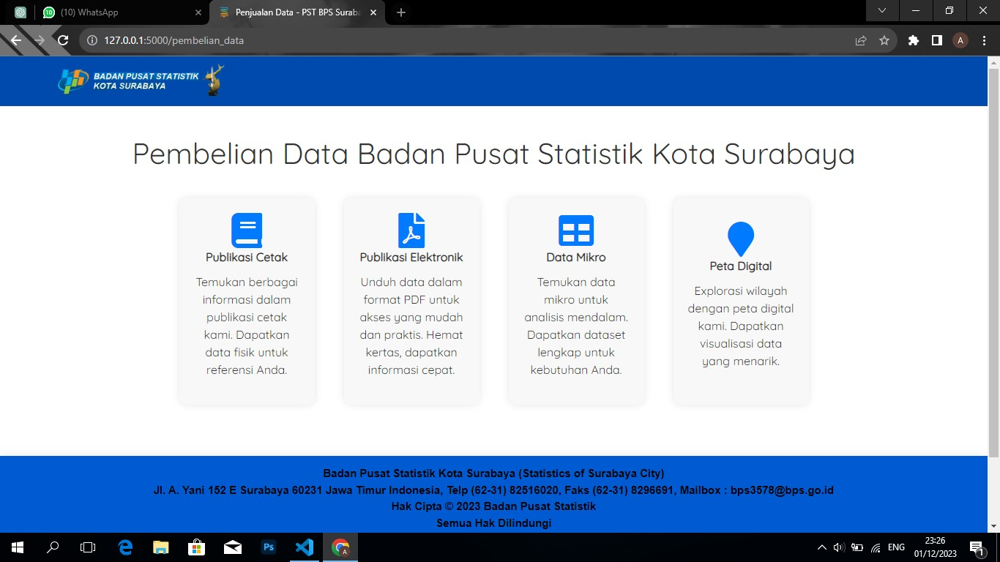
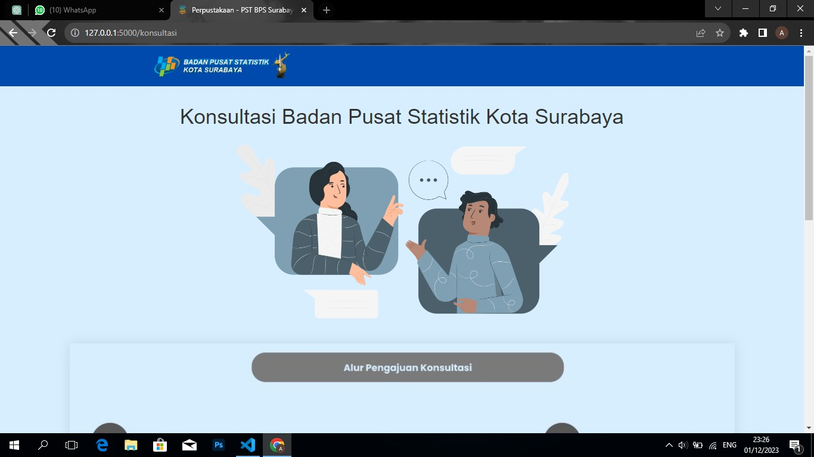
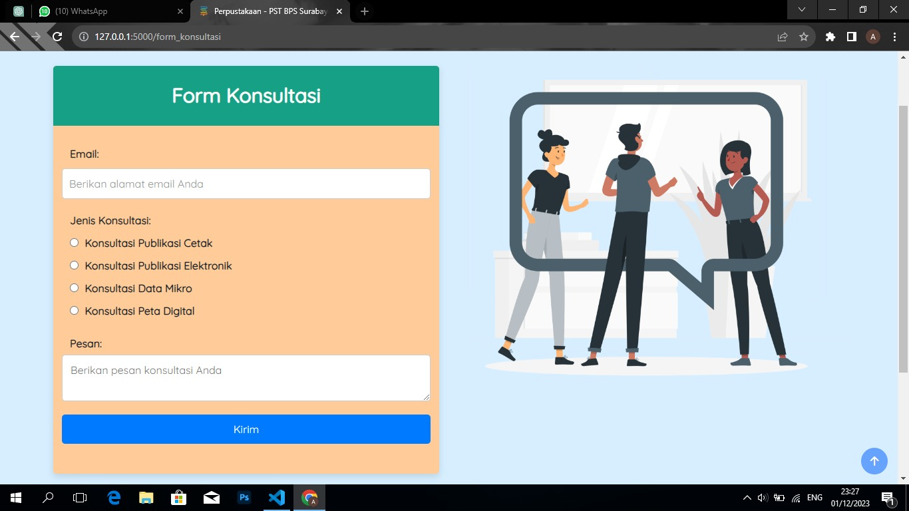
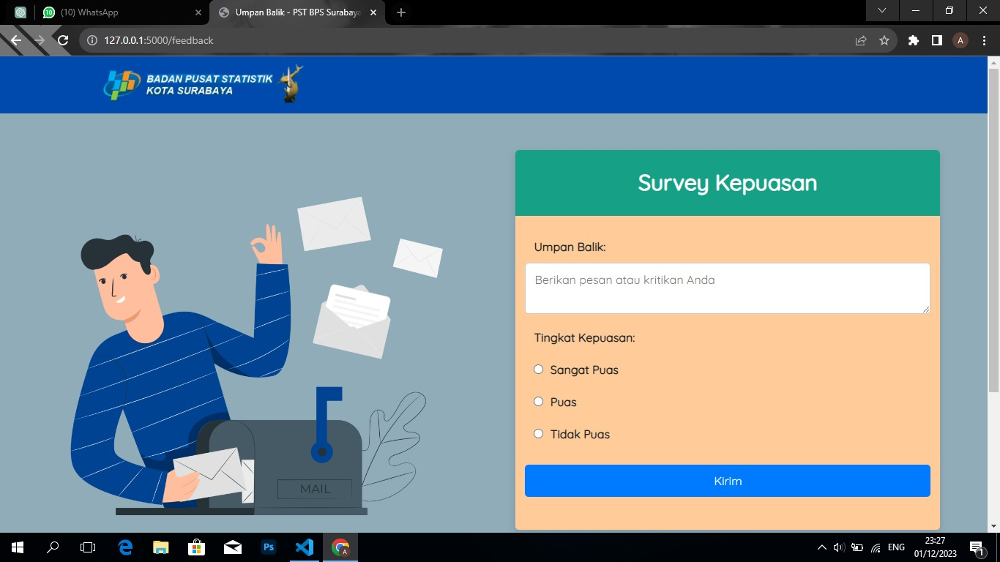
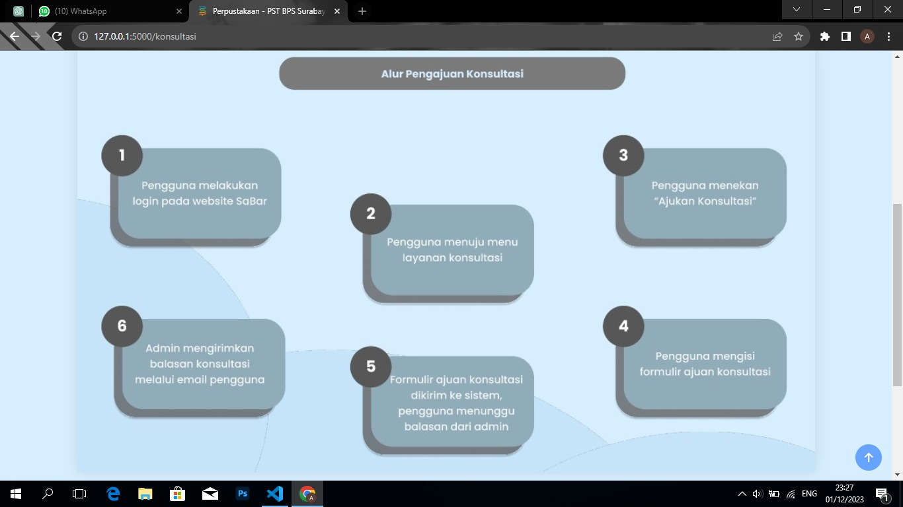
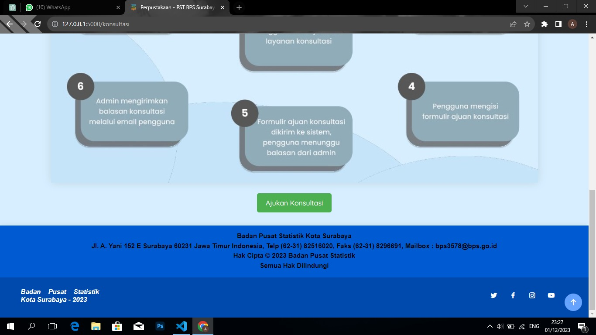

Pelayanan Statistik Terpadu (PST) BPS Surabaya
Project Overview
This project is a web-based integrated statistical service system developed for Badan Pusat Statistik (BPS) Surabaya to digitalize public statistical services and improve accessibility to statistical information.
The system provides publication access, data purchasing services, consultation submission, and feedback collection to support more efficient interaction between users and the institution.
Objectives
- Digitize public statistical service processes.
- Improve accessibility to statistical publications and data services.
- Provide structured consultation and feedback submission features.
- Enhance user experience through a responsive web-based platform.
Tools & Technologies
Key Features
1. Home Page
The home page introduces BPS Surabaya and displays available public statistical services. Users can access service categories such as publication library, data purchasing, consultation, and satisfaction survey.

Home Hero Section

Service Overview Section
2. Publication Library
This feature enables users to search and explore BPS publications using keywords. It improves information retrieval and makes statistical publications easier to access.

Publication Search Page

Publication Favorite Section
3. Data Purchasing Services
The data purchasing page presents several available data services, including printed publications, electronic publications, microdata, and digital maps. This feature helps users understand the available data products before submitting a request.

Data Purchasing Service Categories
4. Consultation System
The consultation feature allows users to submit consultation requests through a structured form. Users can select consultation type, enter email, and write their consultation message for admin follow-up.

Consultation Information Page

Consultation Request Form
5. Feedback & Satisfaction Survey
The feedback system collects user satisfaction responses and criticism or suggestions. This feature supports service quality improvement by allowing users to provide direct feedback through the platform.

Satisfaction Survey Options
6. Consultation Workflow
The workflow documentation explains the consultation process, starting from user login, selecting consultation service, submitting the form, and receiving an admin response through email.

Consultation Workflow Overview

Consultation Submission Flow
Results & Impact
- Developed a digital platform for integrated statistical services.
- Improved public access to BPS Surabaya publications and data services.
- Provided structured consultation and feedback features for users.
- Supported service efficiency through a more organized web-based workflow.
GitHub Repository
Source code and project implementation are available on GitHub.
View Source Code on GitHub →